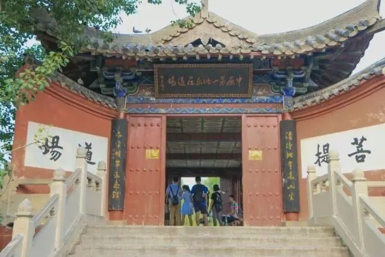
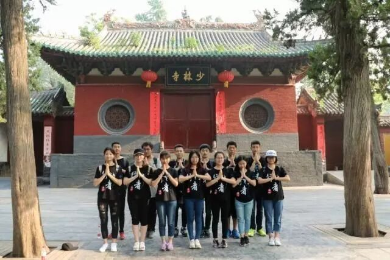

【行者明信片·伍·我眼中的文化】

行者无疆
白布局，
-

白布局，
我眼中的文化

——大傻 孔令澎

序 言
我的心中一直存在一个疑问，文化的作用究竟在哪里呢？在我们日常生活中，人们总觉得文化是一种虚无缥缈的存在，鲜有人留心思考它的存在。而我认为，人们之所以觉得文化无所在的原因，是因为其无所不在。在我的认知与理解中，文化是习惯，是共同语言，是人们劳动的精神与物质成果。诗词歌赋，五行八卦，各地方言，八大菜系，这些都是文化的象征，它就像空气一样渗透在我们的生活之中，而当我们离开它的时候，才会发现其意义。
一.来自大学的感想

刚入学时，从山东来到东北，最明显的改变就是语言和饮食。听了十八年山东话的耳朵淹没在东北话的汪洋中，“埋汰”、“半个点儿”这些闻所未闻的话进入我的脑子，着实让人不太适应。这大概是我第一次留心文化差异，并体会到文化的存在。我的心中一直存在一个疑问，文化的作用究竟在哪里呢？在我们日常生活中，人们总觉得文化是一种虚无缥缈的存在，鲜有人留心思考它的存在。而我认为，人们之所以觉得文化无所在的原因，是因为其无所不在。在我的认知与理解中，文化是习惯，是共同语言，是人们劳动的精神与物质成果。诗词歌赋，五行八卦，各地方言，八大菜系，这些都是文化的象征，它就像空气一样渗透在我们的生活之中，而当我们离开它的时候，才会发现其意义。
二.进一步的认知

而在河南调研的这六天，我却着实对这片土地有着特殊的亲切感。河南省与山东省在土地上毗邻，在语言上相通，在饮食上相似，总而言之，两省具有较为相似的文化。而文化又取决于什么呢？我想答案是当地客观条件加上一些巧合。人们常说“老乡见老乡，两眼泪汪汪”，老乡相见，亲切之感油然而生，而何为“亲切”呢？我想这“亲切”便是两人的“共同语言”，即相同之处。两人有着相同的生活环境，说着相同的话吃着相同的食物，穿着相同的衣服，听着相同的小曲儿，过着相同的节日，有着相同的礼俗习惯，怎能不亲切呢？
三.与文化同行
在中国文字博物馆中，我叹服于古人的智慧。五千年前，甚至更早，先人创造出了最基本的符号以记事，之后随着文明的发展，造字的方法也越来越多，最终可归纳为“象形”“指事”“会意”“形声”“转注”“假借”六种方法。这也成为了中国文化中不可或缺的一部分。几千年来，改朝换代，而文字的根基并没有改变，各个朝代因当时社会需要而不断改进文字，最终形成了现在文字体系。
四大文明古国，唯有中国的文明不曾间断，其原因就在于中国文化一脉相承。古印度、古巴比伦、古埃及这三个国家在遭受入侵后，文明毁于一旦，这三者的文字都无人能读懂，而中国文化却以他极大的包容性存留下来。
除上述文化元素外，宗教也是中国文化中不可或缺的一部分，本次调研涵盖少林寺，白马寺等佛教名寺，也让我对此有了更加深刻的了解。佛教在汉朝由印度传入中国，而其受中原文化的影响，在发展的过程中本土化了，这也可以算是佛教的“因地制宜”。
四.敢问路在何方

这次实践所收获的不仅是拓宽视野，深化对文化的理解，还有一种众人心往一处想的归属感。实地调研的日子不长，但与大家相处都很融洽。工作上相互协调，统筹规划，严肃以待，而生活上却谈天说地，有说有笑。我想这也是一种文化吧，一群人来自同一所大学，拥有相同的目标，相似的生活习惯，相近的性格，开朗乐天而又严谨认真，这是一种行者无疆实践团的文化。这种小范围的文化使我们彼此信赖，没有隔阂，我想这也是一个团队不可或缺的部分。
结 尾
“
学海无涯，行者无疆，中国文化浩如烟海，吾辈将上下而求索。
”

文 | 孔令澎
责编 | 王梓腾
审核 | 章静 彭博

河南行
且将新火试新茶
诗酒趁年华
行者无疆
♦
贰
公众号：行者无疆实践团
微博号：行丶者丶无丶疆
邮箱：2758025831@qq.com